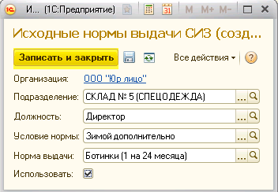

Данный регистр заполняется несколькими способами:
1. Загрузкой норм из файла при внедрении обработкой "Загрузка первичной информации".
2. Конвертацией (переносом данных) из редакции 1.0 в редакцию 2.0.
3. Созданием норм обработкой "Создание норм выдачи СИЗ".
4. Созданием непосредственно в форме "Исходные нормы" в разрезе организации.
Для создания норм в форме "Исходные нормы" нажмите кнопку "Создать".
Откроется окно для заполнения информации по норме:
Выберите подразделение, должность, условие и норму выдачи. Если данную норму пока не планируется использовать, не проставляйте флажок «Использовать». Если же норма должна быть в дальнейшем установлена, проставьте флажок «Использовать». После заполнения формы нажмите «Записать и закрыть».

Вы можете изменить уже созданную норму, нажав на кнопку
В данной формы есть возможность прекращать использование актуальных норм, сняв галочку «использовать»; удалять неактуальные нормы; добавлять новые нормы.
Примечание. Для того, чтобы изменения вступили в силу, необходимо создать "Приказ по нормам выдачи СИЗ".